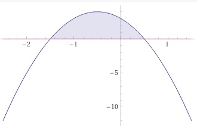

Aufgabe 43 Bestimmen Sie die Lösungsmenge der Ungleichung für x ∈ ℝ: 3 - 4x - 4x² ≥ 0 3 - 4x - 4x² ≥ 0 |*(-1)| 4x² + 4x - 3 ≤ 0 |:4 x² + x - 0,75 ≤ 0 Quadratische Ergänzung: x² + x + 0,25 - 0,25 - 0,75 ≤ 0 (x + 0,5)² - 1 ≤ 0 |+1 (x + 0,5)² ≤ 1 |ⱱ |x + 0,5| ≤ 1 Fallunterscheidung: 1. Fall |x + 0,5| = x + 0,5 für x + 0,5 ≥ 0 --> x ≥ -0,5 x + 0,5 ≤ 1 |-0,5 x ≤ 0,5 L1 = x ≥ -0,5 ∩ x ≤ 0,5 = -0,5 ≤ x ≤ 0,5 2. Fall |x + 0,5| = -(x + 0,5) für x + 0,5 < 0 --> x < -0,5 -(x + 0,5) ≤ 1 -x - 0,5 ≤ 1 |+x - 1 x ≥ -1,5 L2 = x < -0,5 ∩ x ≥ -1,5 = - 1,5 ≤ x < -0,5 L = L1 ∪ L2 = - 0,5 ≤ x ≤ 0,5 ∪ - 1,5 ≤ x < -0,5 L = -1,5 ≤ x ≤ 0,5 